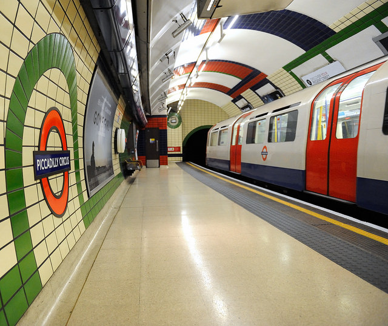
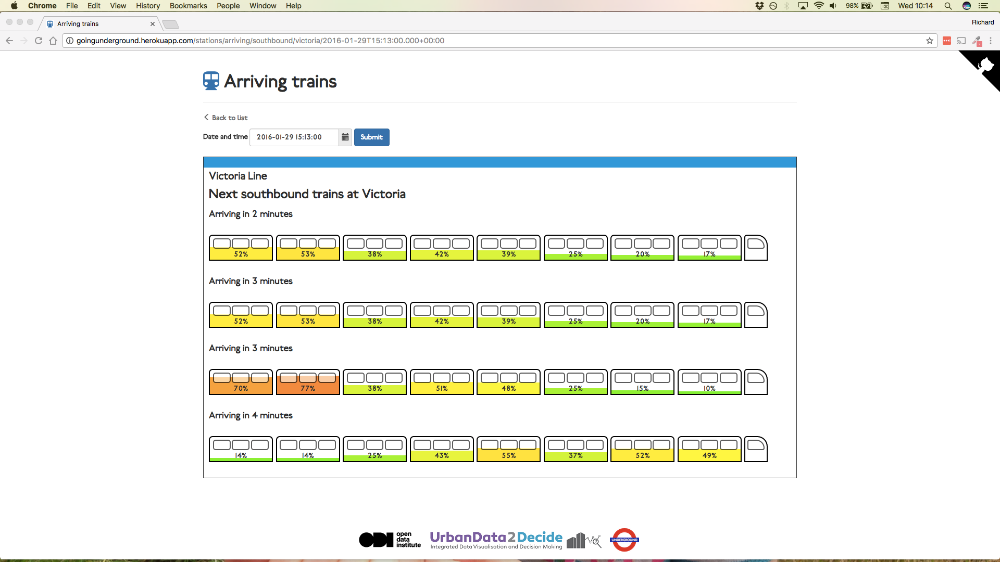

Case study: Open innovation at Transport for London
- Summary
- What is the challenge?
- How are they solving the problem?
- What was the impact of taking this approach?
- What lessons did they learn?
- Technology
- Processes
- Organisation
- How to cite this case study
 London Underground are trying to tackle crowding through open innovation with data. CC BY 2.0, uploaded by Tim Adams.
Summary
London Underground carries almost five million passengers everyday. As these figures continue to grow, Transport for London (TfL), the organisation responsible for providing public transport in London, must find ways to improve efficiency in spite of budget constraints and aging physical infrastructure. One issue they are addressing is that of uneven distribution of passengers on platforms and trains, which slows boarding and reduces passenger comfort.
To tackle this, TfL have been working on capturing just some of the massive amounts of data produced by its Tube trains. This sensor data, usually locked up within the trains, has been shared with the ODI to build a proof-of-concept tool which displays crowding within approaching trains. The data has also been shared with other organisations to understand further potential applications and benefits.
This open, flexible approach to research and development meant that many possible uses of the data could be explored and new concepts discussed to tackle future capacity issues. These pilot projects are being used by TfL to assess whether collecting and sharing this data warrants further investment.
What is the challenge?
London is a busy city with a population of 8.6 million, a huge proportion of which use public transport every day. Recently London Underground recorded its busiest day ever, carrying 4.821 million passengers. Annually this figure is 1.34 billion. As the city’s population rises, the demand on Transport for London’s services will also grow. Finding ways to cope with an extra 2 million Londoners by 2030 is a priority.
Many of these journeys involve travelling on the London Underground (also known as 'the Tube'). But there are constraints on the physical infrastructure which make it challenging to increase capacity. Tunnels built more than a hundred years ago weave around other pieces of critical infrastructure like sewers, power lines and foundations. It is not feasible to make these tunnels larger to fit in bigger trains, or to simply add new lines. At rush-hour the Tube timetable has the maximum number of trains that can safely be deployed.
The challenge for Transport for London is to how to maximise the Tube’s efficiency against these constraints. To do this, they have adopted a ‘marginal gains’ approach. This philosophy involves making small improvements across as many areas as possible, which cumulatively deliver significant impact.
Crowding on platforms and trains is one of the key challenges that TfL need to address in order to improve the efficiency of the Tube network. Due to the way certain stations are designed, bottlenecks can appear and as a result passengers are not always evenly distributed across the length of the platform. This can result in slower, less efficient boarding and reduced passenger comfort. Addressing this issue is one way that TfL can potentially improve the efficiency of the Tube network as well as the passenger experience.
How is the problem being solved?
Given the constraints on the physical infrastructure, TfL have to search for other ways to tackle problems like crowding of trains and platforms. Data plays a key role in identifying, executing and measuring improvements. Modern transport systems are a rich source of useful data and almost every component within a carriage contains a sensor, including the engines, speedometers, brakes, doors and suspension. The London Underground team are running a pilot project to extract this data and find ways to harness its potential.
As part of this initiative, the ODI built a proof-of-concept crowding indicator tool using the extracted sensor data, visualising how crowded each carriage was for any given train. Although the ODI only had data for a single train, they built the tool to also show how crowded the next four trains would be.

By visualising the data in this way, passengers can get a better sense of where to stand in order to board a less crowded, and therefore more pleasant, carriage. This could ultimately improve the boarding process and reduce dwell time (the length of time that the train has to wait on the platform). This visualisation could either be displayed directly on the platform, could be made available to the station staff who manage the platforms, or directly to smartphones connected to the underground WiFi.
What was the impact of taking this approach?
Although this was only a proof of concept prototype, it has had an impact on the way that TfL innovates. Our initial work with TfL took this data to an 'alpha' state where many of the initial questions and refinements were made. The ODI then worked with TfL to take this data into a 'beta' stage by testing it with a wider group of users.
Firstly, opening up the research and development process in this way meant that TfL could gauge how useful this data could be based on a relatively small sample – a single Victoria line train – and without having to spend a great deal of time and money. Being able to test the utility of the data is extremely valuable before investing further in expanding the initiative.
A second benefit is the ability to find imaginative uses for this data. These use cases based on existing data can help justify further investment in a project and the benefits of eventually opening the data to external innovators when data collection is more advanced. In the realm of marginal gains, some of these use cases may contribute to a cumulative improvement in efficiency across the transport network over time.
What lessons did they learn?
Our cities are increasingly full of sensors which produce high volumes of data. This data can be extremely useful, but obtaining it and getting it into a usable form takes work. Engaging external people to become users of this data is the best way to understand what is needed to make these refinements, but also to understand the potential value that the data may have. Delivering this type of innovation project requires some key ingredients, namely in the areas of technology, processes and organisations.
Technology
Sensors are increasingly a part of our physical infrastructure. Whilst they are often installed with a very specific purpose, there are potentially lots of different applications for the data that they produce. For example, carriage load sensors are designed to help the train adjust its suspension as needed. The data they record can also be used to indicate how many passengers are in each carriage.
Accessing this data is not always straightforward. It is possible to interrogate the data via a proprietary software provided by the train manufacturer, but this is limited and does not give the freedom to build new tools or services using the data. To obtain the raw data in a more usable format, TfL needed to install a special logger on each train they wanted to get data from. Installing new hardware on a critical piece of transport infrastructure is not straightforward and involves a lengthy approval process. While ingenuity can extract data from existing platforms, cities should consider access to data generated during the procurement process in the future.
Cities are increasingly becoming instrumented; much of the data that is captured across our physical infrastructure has a very specific purpose. Making it available to others opens up the possibility of finding new applications and new improvements to the way that our cities work.
Processes
Raw sensor data can be extremely valuable, but there is often work required to get it into a usable format. As part of the pilot, TfL installed a logger on a single Victoria line train. This captured data from hundreds of different sensors every tenth of a second. Making sense of such a large volume of engineering data is not straightforward.
Work was needed to get this data into a state where it could support the development of tools and services. It was important to understand what part of the train was represented by each signal and how you would expect them to behave as well as which signals were more useful than others. How the train’s location could be inferred based on these signals needed to be pieced together.
Getting raw data like this into something usable involves a feedback loop between the data provider and data user. Many of the questions that you need to address to refine the data will only become apparent once people are trying to make use of it.
Similarly, you will only know whether the data can lead to improvements by giving people the opportunity to ask these questions. In this project the ODI was lucky to have a healthy relationship with the TfL innovation team; regular communication meant that the data could be quickly transformed into something that others could use. Taking this user-centric approach to preparing and publishing data is important to ensuring that the data has the maximum impact from day one.
Organisation
Alongside the process of user-engagement is the need to engage others in helping to solve your problems. One of the striking features of TfL's approach was their willingness to open up their R&D process and involve other organisations in proving the concept of using signal data to manage crowding more effectively.
The ODI were not the only organisation looking to build a proof of concept with this data. Others were also enlisted by TfL to see what could be done. For example, a sample of the data was provided to the IMCreate Hackathon run by the Transport Systems Catapult. Similarly, Vizicities and Aiseedo were commissioned to explore how the data could support 3D visualisations and machine-learning.
To execute this type of R&D, having a dedicated innovation team is incredibly useful. This team can be vital in exploring novel uses for data, and they can provide a mechanism for engaging external users and partners.
How to cite this case study
This case study was published in February 2017 by the Open Data Institute.
Please cite this case study as follows: Open Data Institute (2016) Case study: Transport for London. London, UK. Available at ../case-studies/case-study-transport-for-london
Author: Richard Norris
Editing and production: Anna Scott and Alexander Leon
Contact: [email protected]
Supported by